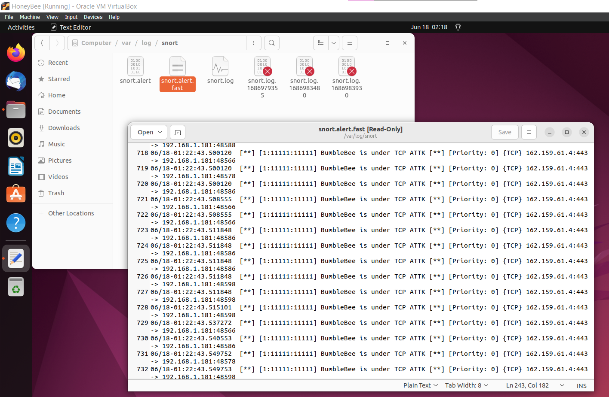

CURT FORNOLLES
ABOUT ME
Curt Fornolles, a dedicated individual, relocated to the United States with the aim of achieving the American Dream. He possesses a strong desire to become a Cybersecurity Threat Hunter and works diligently to enhance his skills by pursuing College Education, obtaining Cybersecurity Certifications, and networking with industry experts. Despite an 8-year career in the restaurant industry, he successfully transitioned into the Information Technology field in 2021. Curt derives great fulfillment from resolving IT challenges and ensuring security, which inspired him to pursue a career as a Threat Hunter after shadowing a professional in this domain. His enthusiasm for analyzing potential threats and vulnerabilities within IT infrastructures drives him to safeguard critical systems and strengthen their security.
LABS & PROJECTS
( CLICK TO PREVIEW )
Cloud System Information Event Management(SIEM)


Utilized custom PowerShell script to extract metadata from Windows Event Viewer, forwarding the data to a third-party API to derive geolocation data.

Configured Azure Log Analytics Workspace to ingest custom logs containing geographic information (latitude, longitude, state/province, and country) and limit data displayed with KQL (Kusto Query Language).

Created visual representations using pie charts, bar graphs, and world maps in Azure Sentinel (SIEM) Workbook to demonstrate the evolving global attack data for RDP Brute Force incidents targeting my Virtual Machine (Honeypot).

Intrustion Detection and Prevention(IDS/IPS)

Established a virtualized environment using VirtualBox (Oracle's Type-2 Hypervisor), configuring two Virtual Machines: one running Ubuntu as the target and the other running Kali Linux to generate network traffic.


Designed and implemented a customized Alert Rule for SNORT (IDS/IPS), specifically tailored to detect and analyze TCP/IP traffic within the environment.


Successfully executed an NMAP command aimed at the Honeypot, resulting in SNORT (IDS/IPS) promptly detecting and triggering the rule, accompanied by a relevant alert message.
Vulnerability Management
Installed and configured Nessus Essentials for credential vulnerability scans on Windows 10 hosts, optimizing security assessment and risk mitigation.

Implemented end-to-end vulnerability management on sandbox networks, encompassing Discovery, Prioritization, Assessment, Reporting, Remediation, and Verification.
Conducted vulnerability assessments with Nessus, efficiently identifying and remediating vulnerabilities while developing automated processes to proactively address risks associated with Windows updates and third-party software.

Network Map

Proficiently designed and simulated network environments using Packet Tracer, gaining valuable hands-on experience with various commands and networking concepts.
Strengthened wireless security by configuring router security mode to WPA2 Personal with AES encryption, ensuring data confidentiality and integrity in live environments.